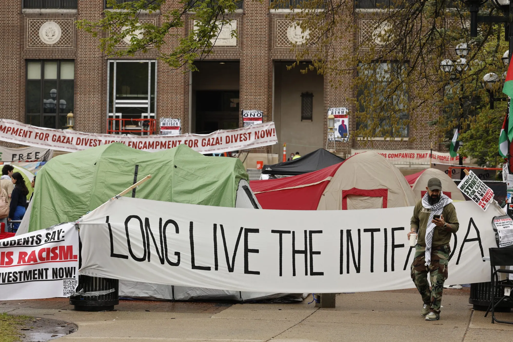

At this very moment, a student-led grassroots movement is spreading throughout the country, with over 100 encampments going up at different college and university campuses around the country and around the world in protest of Israel’s US-funded genocidal war on Gaza and ethnic cleansing of Palestinians. In what is being called the “student intifada,” students, faculty, grad students, and other campus community members are exercising civil disobedience, occupying space on campuses, defying brutal repression from administrators and police, combatting skewed and wildly lopsided narratives in corporate media, and pressuring their universities to “disclose and divest” their investments in companies and financial institutions connected to Israel.
In this urgent podcast, we take you to the frontlines of struggle and speak directly with student and grad student organizers of the Gaza encampment at the University of Michigan’s flagship campus in Ann Arbor. As the Michigan Daily, the student newspaper, reports, “The encampment was organized by the TAHRIR Coalition, a student-led coalition of more than 80 organizations including the U-M chapter of Jewish Voice for Peace and Students Allied for Freedom and Equality. The encampment follows six months of student protests for the University’s divestment, which began with a sit-in at the President’s house in October. Since then, students have continuously organized protests across campus demanding the University divest from Israel’s military campaign in Gaza.” TRNN’s Editor-in-Chief Maximillian Alvarez (who is an alumnus of the University of Michigan), speaks with Salma Hamamy, an undergraduate at UM and president of Students Allied For Freedom and Equality (SAFE), and Ember McCoy, a graduate student worker and department organizer in the Graduate Employees Organization (GEO).